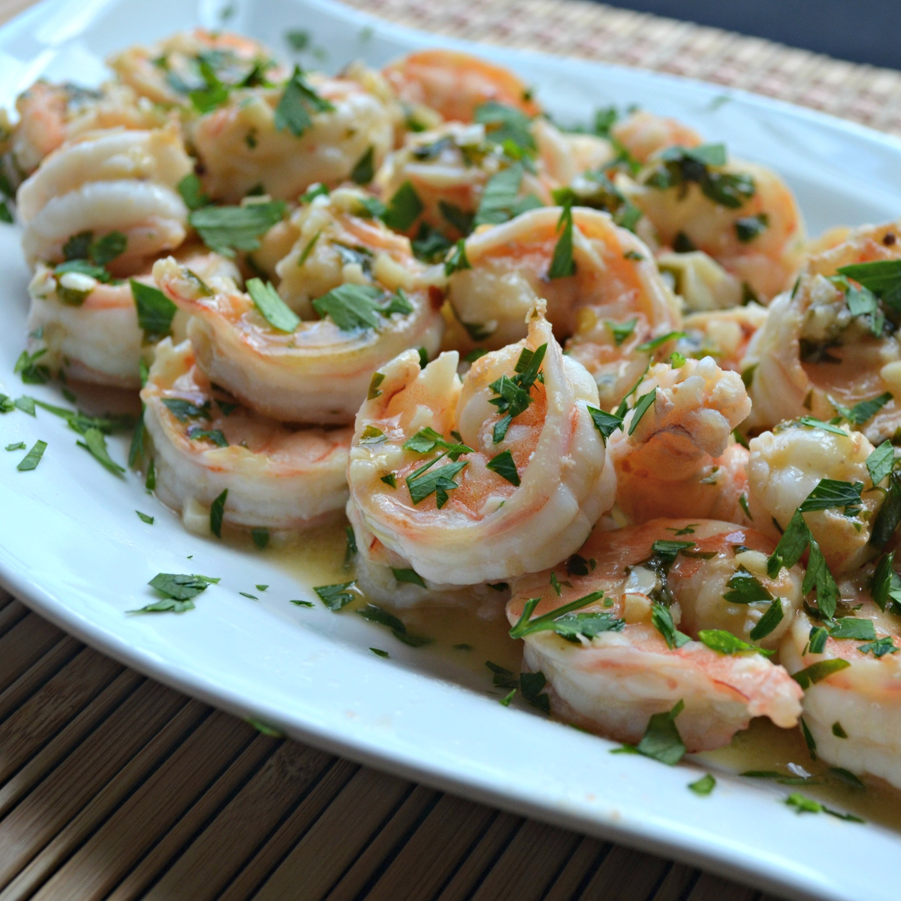

Simple Garlic Shrimp

Description
A quick and delicious recipe for shrimp from
allrecipes.com
Ingredients
- 1 1/2 tablespoons olive oil
- 1 pound peeled and deveined shrimp (I prefer 16-20 count)
- salt to taste
- 6 cloves garlic, finely minced
- 1/4 teaspoon red pepper flakes
- 3 tablespoons lemon juice
- 1 tablespoon caper brine
- 2 tablespoons butter, cut into 4 equal pieces, divided
- 1/3 cup chopped flat-leaf parsley, divided
- 1 teaspoon water, or as needed
Directions
- Heat olive oil in a heavy skillet over high heat until it
just begins to smoke. Place shrimp in an even layer on the bottom of
the pan and cook for 1 minute without stirring.
- Season shrimp with salt; cook and stir until shrimp begin to
turn pink, about 1 minute.
- Stir in garlic and red pepper flakes; cook and stir 1
minute.
- Stir in lemon juice, caper brine, 1 piece butter, and 1/2 of
the parsley. Cook until butter has melted, about 1 minute.
- Reduce heat to low and stir in remaining 3 pieces butter. Cook
and stir until butter has melted, sauce is thick, and shrimp are pink
and opaque, 2 to 3 minutes.
- Remove shrimp with a slotted spoon and transfer to a bowl;
continue to cook butter sauce, adding water 1 teaspoon at a time if
too thick, about 2 minutes. Season with salt.
- Serve shrimp topped with the pan sauce and remaining parsley.